☀
Variable Oscillations
☀
Variable Oscillations
Auxiliary Research Station
 Glitch-A-Sketch
Glitch-A-Sketch
A portable audiovisual plotting machine. It appears to harness the biological creative energy of the user, converting it into sounds and images.
The device often attempts to exceed its physical bounds, resulting in displayed data of unknown origins.
IO: 3.5mm headphone output, coin cell battery powered
Dimensions: 86 x 40 x 26 mm

[ Stored Data ]
[ Architecture ]
[ Documentation ]
[ x ]

stored data
/ 4